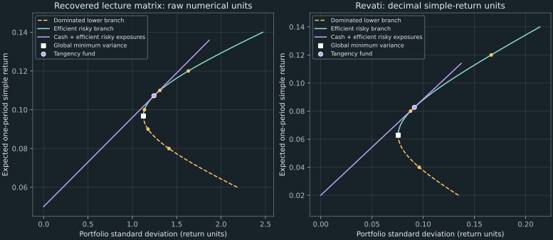

19. Equality-constrained mean–variance portfolios
Revati has three risky assets with expected one-period returns of 4%, 8%, and 12%, and diagonal return covariance entries 0.01, 0.02, and 0.04. She wants an 8% expected portfolio return with the smallest possible variance. The solution is not simply to buy the middle asset: the optimal weights are $(4,5,4)/13$, giving variance $1/130$ instead of the middle asset's 0.02. We will derive those weights, certify their global optimality, and ask how the answer changes when the target or the available assets change.
Source spine: recordings 54, 55, 56, and the complete worked problems in 62. The equality, frontier, and tangency portions of the paired R lab 64 and Python lab 65 are integrated here. Their inequality/barrier and arbitrage portions belong to Chapters 20 and 21. Proofs, diagnostics, figures, and the public Python implementation are independently developed teaching material.
19.1 Specify the return, risk, and admissible portfolios Recording 54, 0:15 Recording 62, 0:15
Fix one investment period. Let $R=(R_1,\ldots,R_n)^T$ be the vector of random simple returns, with finite second moments, expected return vector $\mu=E[R]$, and covariance matrix $\Sigma=E[(R-\mu)(R-\mu)^T]$. Returns such as 8% are represented by 0.08. Covariances have squared-return units. The diagonal entries of Revati's matrix are variances, so the asset standard deviations are their square roots. A diagonal covariance matrix says the returns are uncorrelated; it does not establish independence.
A column vector $w\in\mathbb R^n$ records amounts invested in each risky asset as fractions of the initial wealth unit. With a fully invested risky portfolio, $\mathbf1^Tw=1$, where $\mathbf1$ is the column of $n$ ones. A negative component is a short position; the model allows it without a position limit or trading friction. The portfolio simple return is $w^TR$ when the budget is one. Its expectation is $\mu^Tw$ and its variance is $w^T\Sigma w$, as derived in Chapter 5.
For sensitivity calculations, allow a general risky budget $b\in\mathbb R$ and a target expected risky gain $m\in\mathbb R$, both relative to the same initial wealth unit. Then $m$ is the expected return of a fully invested portfolio only when $b=1$. We solve
\[ V(m,b)=\min_{w\in\mathbb R^n}\frac12w^T\Sigma w \quad\text{subject to}\quad \mu^Tw=m,\quad\mathbf1^Tw=b. \tag{19.1} \]The factor one half simplifies derivatives. It does not change the minimizing weights. It does change the numerical meaning of the objective value and its multipliers: $V$ is half the minimum variance. The main derivation assumes $\Sigma$ is symmetric positive definite and $\mu$ is not a constant vector. These conditions guarantee independent constraints and a unique optimum for every real pair $(m,b)$. Covariance matrices are always positive semidefinite, but strict positive definiteness is an additional assumption.
There are two distinct tasks in the workshop. Nikhil first minimizes variance with only the budget constraint, using expected returns $(0.07,0.13)$, standard deviations $(0.10,0.20)$, and correlation 0.25. His covariance off-diagonal is $0.25(0.10)(0.20)=0.005$. The budget-only optimum is $(7/8,1/8)$, with mean 0.0775 and variance 0.009375. Imposing a target of 0.10 instead leaves the unique feasible weights $(1/2,1/2)$ and variance 0.015. An extra constraint can increase minimum risk; a higher target is not a free improvement.
Markowitz's 1952 paper, printed pp. 77–80, develops the expected-return/variance distinction and covariance-based diversification. Its stated setting excludes short sales. Our unrestricted equality model is a deliberately different admissible set, chosen to expose the algebra. Chapter 20 restores nonnegativity and the corresponding optimality conditions.
19.2 Differentiate a scalar with respect to a portfolio Recording 55, 0:15
For a differentiable scalar function $f(w)$, its gradient $\nabla f(w)$ is the column vector satisfying $df=(\nabla f(w))^Tdw$. This convention fixes all transposes. A linear function $a^Tw$, with constant vector $a$, has differential $a^Tdw$ and gradient $a$.
For a constant real matrix $Q$, expand a quadratic in an arbitrary direction $h$:
\[ (w+\epsilon h)^TQ(w+\epsilon h) =w^TQw+\epsilon(h^TQw+w^TQh)+\epsilon^2h^TQh. \]The coefficient of $\epsilon$ is $h^T(Q+Q^T)w$, because a scalar equals its transpose. Thus $\nabla(w^TQw)=(Q+Q^T)w$. The frequently used expression $2Qw$ requires symmetry. Covariance matrices have that symmetry, so for $f(w)=\tfrac12w^T\Sigma w$,
\[ \nabla f(w)=\Sigma w,\qquad \nabla^2 f(w)=\Sigma. \tag{19.2} \]The Hessian $\nabla^2 f$ is the matrix of second derivatives. A symmetric positive semidefinite Hessian means the quadratic is convex: bending away from a tangent plane never decreases its value below that plane. Positive definiteness makes that bending strict in every nonzero direction. We will use the exact quadratic expansion, rather than a sketch of a bowl, to prove optimality on the constraint set.
Introduce scalar multipliers $\lambda$ for the mean constraint and $\nu$ for the budget constraint, and define the Lagrangian
\[ L(w,\lambda,\nu)=\frac12w^T\Sigma w-\lambda(\mu^Tw-m) -\nu(\mathbf1^Tw-b). \]At an optimum with independent equality constraints, the objective gradient must be a linear combination of their gradients. To see why, every feasible infinitesimal move $h$ satisfies $\mu^Th=\mathbf1^Th=0$. The directional derivative $h^T\Sigma w$ must vanish for all such moves, since both $h$ and $-h$ are allowed. The orthogonal complement of this null space is the span of $\mu$ and $\mathbf1$. Consequently $\Sigma w=\lambda\mu+\nu\mathbf1$. This gives a geometric derivation of stationarity as well as the usual calculation $\nabla_wL=0$.
The multipliers do not impose a sign restriction on equality constraints. Either can be positive, negative, or zero. Their signs describe local objective sensitivity under our specified Lagrangian convention, not a probability or a mandatory risk premium.
19.3 Turn stationarity into a global certificate Recording 55, 8:00
Let $E=[\,\mu\ \mathbf1\,]$ be the $n$-by-2 constraint matrix, let $d=(m,b)^T$, and let $\eta=(\lambda,\nu)^T$ be the multiplier vector. The stationarity and feasibility equations are
\[ \Sigma w=E\eta,\qquad E^Tw=d, \quad\text{or}\quad \begin{pmatrix}\Sigma&-E\\E^T&0_{2\times2}\end{pmatrix} \begin{pmatrix}w\\\eta\end{pmatrix} =\begin{pmatrix}0_n\\d\end{pmatrix}. \tag{19.3} \]There are $n+2$ unknowns and $n+2$ scalar equations. These are the equality-constrained Karush–Kuhn–Tucker, or KKT, equations. In the block arrangement used here and in the labs, the full matrix is not symmetric because the two off-diagonal blocks have opposite signs. Negating its bottom two rows and the corresponding right-hand side produces a symmetric matrix. That symmetric KKT matrix is generally indefinite, even though $\Sigma$ is positive definite. Cholesky factorization is appropriate for the covariance block, not automatically for the full KKT matrix.
A stationary point of an arbitrary nonlinear optimization problem need not minimize anything. Here the quadratic structure supplies an exact certificate. Suppose $w_*$ satisfies (19.3). Every other feasible vector has the form $w_*+h$ with $E^Th=0$. Expanding its objective gives
\[ f(w_*+h)-f(w_*)=h^T\Sigma w_*+\frac12h^T\Sigma h =h^TE\eta+\frac12h^T\Sigma h =\frac12h^T\Sigma h\geq0. \tag{19.4} \]The cross term vanishes because the move preserves both constraints. Positive semidefiniteness establishes global optimality; positive definiteness makes the increase strictly positive for every nonzero feasible $h$, establishing uniqueness. This proof compares the candidate against every feasible portfolio, rather than checking only a few neighboring points.
These assumptions also make the KKT system nonsingular. In its homogeneous version, feasibility gives $E^Tw=0$, so stationarity implies $w^T\Sigma w=w^TE\eta=0$. Positive definiteness forces $w=0$. The two columns of $E$ are independent, so $E\eta=0$ forces $\eta=0$. A square system with no nonzero homogeneous solution is invertible. Existence then follows for every right-hand side.
The condition can be weakened: $\Sigma$ need only be strictly positive on the feasible-direction space $\{h:E^Th=0\}$. A singular covariance matrix is therefore not automatically a failed optimization problem. For example, with $\Sigma=\operatorname{diag}(1,0)$, $\mu=(0,1)^T$, and budget one, the mean constraint fixes $w_2=m$ and the budget fixes $w_1=1-m$. There is a unique feasible portfolio despite singular covariance. The two-by-two inverse-covariance formula below is unavailable, but the original constrained problem remains meaningful.
Boyd and Vandenberghe, Convex Optimization, printed pp. 521–523, gives the general equality-constrained quadratic KKT system and this null-space definiteness criterion. Our proof establishes the simpler strict-covariance case directly. Replacing an inverse by a pseudoinverse without revisiting feasibility and uniqueness would not establish the more general result.
19.4 Solve two covariance systems, then a two-dimensional system Recording 55, 14:17 Recording 62, 13:20
Equation (19.3) is a direct route to the answer. A second route eliminates the $n$ weights from the multiplier equations. Solve $\Sigma Y=E$ for the $n$-by-2 matrix $Y$, form the two-by-two matrix $G=E^TY$, solve $G\eta=d$, and set $w=Y\eta$. This is the Schur-complement reduction of the block system. It uses linear solves rather than constructing a full inverse. Since $E$ has independent columns, $z^TGz=(Ez)^T\Sigma^{-1}(Ez)>0$ for every nonzero two-vector $z$, so $G$ is positive definite too.
For an analytic formula, define three scalars
\[ A=\mathbf1^T\Sigma^{-1}\mathbf1,\qquad B=\mathbf1^T\Sigma^{-1}\mu,\qquad C=\mu^T\Sigma^{-1}\mu,\qquad \Delta=AC-B^2. \]These expressions specify mathematical quantities; the implementation computes them by solving systems. Positive definiteness defines an inner product $\langle u,v\rangle=u^T\Sigma^{-1}v$. The Cauchy–Schwarz inequality gives $B^2\leq AC$, and equality requires $\mu$ proportional to $\mathbf1$. Our independent-constraint assumption therefore gives $\Delta>0$. In the column order $E=[\mu,\mathbf1]$, the reduced equations are
\[ \begin{pmatrix}C&B\\B&A\end{pmatrix} \begin{pmatrix}\lambda\\\nu\end{pmatrix} =\begin{pmatrix}m\\b\end{pmatrix}, \quad \lambda=\frac{Am-Bb}{\Delta},\qquad \nu=\frac{Cb-Bm}{\Delta}. \tag{19.5} \]Back-substitution gives $w_*=\Sigma^{-1}(\lambda\mu+\nu\mathbf1)$. Multiplying stationarity by $w_*^T$ also gives $w_*^T\Sigma w_*=\lambda m+\nu b$. Substituting (19.5) yields the optimal full variance
\[ 2V(m,b)=\frac{Am^2-2Bmb+Cb^2}{\Delta}. \tag{19.6} \]For Revati, $\Sigma=\operatorname{diag}(0.01,0.02,0.04)$ and $\mu=(0.04,0.08,0.12)^T$. The reciprocal diagonal entries are $(100,50,25)$, giving $A=175$, $B=11$, $C=0.84$, and $\Delta=26$. At $(m,b)=(0.08,1)$, equation (19.5) gives $\lambda=3/26$ and $\nu=-1/650$. Asset by asset, stationarity becomes $w_i=(\lambda\mu_i+\nu)/\Sigma_{ii}$, producing $(4,5,4)/13$. The budget is one, the mean is 0.08, and direct substitution gives variance $1/130=0.007692307692$. These are three separate checks on the result.
The earlier lecture and both language labs use the following different teaching inputs, verified against the displayed table in recording 55:
\[ \mu=\begin{pmatrix}0.10\\0.08\\0.12\end{pmatrix},\qquad \Sigma=\begin{pmatrix}4&1&0.5\\1&2&0.3\\0.5&0.3&3\end{pmatrix}, \qquad m=0.10,\quad b=1. \tag{19.7} \]Using these numbers literally gives $w_*=(1/6,5/12,5/12)^T$, $\lambda=25/3$, $\nu=11/24$, and variance $31/24=1.291666666667$. For example, $\Sigma w_*=(31/24,9/8,35/24)^T$, which equals $(25/3)\mu+(11/24)\mathbf1$. The variance then follows from $\lambda m+\nu=31/24$.
The covariance scale in (19.7) is large relative to its decimal means. We preserve it as the source's numerical teaching matrix, without claiming it is an observed return estimate. Under the literal decimal-return convention, its portfolio standard deviation is 1.136515141, or about 114% of the wealth unit. If a covariance table were instead specified in squared percentage points, conversion to decimal-return covariance would require dividing it by 10,000. No such unannounced conversion is made here. Multiplying all covariance entries by a positive common factor leaves the equality-optimal weights unchanged and multiplies the variance and both multipliers by that factor. Means, covariance, axes, and a Sharpe ratio must use one declared convention throughout.
19.5 Interpret a multiplier in the units of the objective Recording 55, 12:55
A shadow price measures how the optimized objective changes when a constraint's right-hand side changes. It is not generally the cost of buying a traded security. Here we can derive the sensitivity directly rather than invoking an unexplained envelope theorem. Differentiate $V=\tfrac12w_*^T\Sigma w_*$ along the solution family. Stationarity gives
\[ dV=(\Sigma w_*)^Tdw_*=\lambda\mu^Tdw_*+\nu\mathbf1^Tdw_* =\lambda\,dm+\nu\,db. \]The last equality differentiates the two constraints while holding $\mu$ and $\Sigma$ fixed. Consequently
\[ \frac{\partial V}{\partial m}=\lambda,\qquad \frac{\partial V}{\partial b}=\nu,\qquad \frac{\partial(2V)}{\partial m}=2\lambda,\qquad \frac{\partial(2V)}{\partial b}=2\nu. \tag{19.8} \]The factor two matters when reporting sensitivity of variance rather than half variance. At Revati's 8% target, a small absolute change $\delta m$ gives a first-order full-variance change $(3/13)\delta m$ at fixed budget. A one-percentage-point target change means $\delta m=0.01$, not one. Formula (19.6) provides the exact correction as well:
\[ (2V)(m+\delta m,b)-(2V)(m,b) =2\lambda\,\delta m+\frac{A}{\Delta}(\delta m)^2. \]The quadratic term is nonnegative. A multiplier is therefore a local derivative, not an exact finite-change rate for an arbitrarily large shift. Below the global minimum-variance mean, $\lambda$ is negative: moving the target upward can initially reduce variance. This is already a warning that the lower half of the minimum-variance curve is not an efficient investment frontier.
For the budget-only problem, stationarity reads $\Sigma w_*=\nu\mathbf1$. Multiplication by $w_*^T$ gives variance $\nu b$, hence variance equals $\nu$ when $b=1$. With a mean constraint present, the corresponding identity is variance $=\lambda m+\nu b$. Carrying the budget-only identity into the two-constraint problem would discard the mean multiplier and produce the wrong interpretation.
19.6 Separate the minimum-variance curve from its efficient branch Recording 56, 0:15 Recording 62, 18:29
Set $b=1$. Completing the square in (19.6) gives
\[ \operatorname{Var}_{\min}(m) =\frac1A+\frac{A}{\Delta}(m-m_0)^2,\qquad m_0=\frac BA. \tag{19.9} \]Thus the global minimum-variance portfolio, abbreviated GMV, has mean $m_0$, variance $1/A$, and weights $w_{\mathrm{GMV}}=\Sigma^{-1}\mathbf1/A$. This also follows by minimizing with only the budget constraint. In variance-versus-mean coordinates, (19.9) is a parabola. In standard-deviation-versus-mean coordinates, writing $s=\sqrt{\operatorname{Var}}$ gives $s^2-(A/\Delta)(m-m_0)^2=1/A$, the relevant right-hand part of a hyperbola. A change of horizontal axis changes the geometry of the plot.
A portfolio is mean–variance efficient if no feasible alternative has at least as high a mean and at most as high a variance, with at least one strict improvement. A point on the lower branch $m<m_0$ is dominated: its reflected upper-branch target $2m_0-m$ has exactly the same variance and a higher mean. The efficient risky branch is therefore $m\geq m_0$, including the GMV point. The entire target-minimum curve is useful for calculation, but only its upper branch is efficient under this criterion.
At a fixed target, equation (19.4) shows that no feasible portfolio lies to the left of the curve in an $(s,m)$ plot. If $n\geq3$ and the two constraints are independent, there is a nonzero feasible direction $h$. Replacing $w_*$ by $w_*+th$ makes the variance $w_*^T\Sigma w_*+t^2h^T\Sigma h$, so every larger variance is attainable at that target. For two assets with two independent constraints, there is no nonzero feasible direction: each target fixes the weights uniquely, so one must not fill in an interior feasible region merely by copying a three-asset sketch.
The recovered lecture matrix gives the following recomputed table. A standard deviation of 1.4 is a raw return-unit number here, not 1.4%.
| Target $m$ | $w_1$ | $w_2$ | $w_3$ | Variance | Standard deviation |
|---|---|---|---|---|---|
| 0.08 | 0.038461538 | 0.980769231 | −0.019230769 | 1.994230769 | 1.412172358 |
| 0.09 | 0.102564103 | 0.698717949 | 0.198717949 | 1.383974359 | 1.176424396 |
| 0.10 | 0.166666667 | 0.416666667 | 0.416666667 | 1.291666667 | 1.136515141 |
| 0.11 | 0.230769231 | 0.134615385 | 0.634615385 | 1.717307692 | 1.310460870 |
| 0.12 | 0.294871795 | −0.147435897 | 0.852564103 | 2.660897436 | 1.631225746 |
The actual minimum is between the coarse target-grid points: $m_0=0.096782178218$, variance 1.264851485149, and weights approximately $(0.146039604,0.507425743,0.346534653)$. Calling 10% the exact minimum because it has the smallest variance among five displayed targets would confuse a sampled grid with an analytic optimum. The labs refine the target grid to draw a smoother curve; equation (19.9) identifies the vertex without a grid search.
For Revati, the targets 0.04, 0.08, and 0.12 yield weights $(12,2,-1)/13$, $(4,5,4)/13$, and $(-4,8,9)/13$, with variances 0.009230769231, 0.007692307692, and 0.027692307692. Even the middle target is above her GMV mean $11/175=0.062857142857$. Her GMV weights are $(4,2,1)/7$ and its variance is $1/175=0.005714285714$. These values distinguish the true minimum from the lowest member of another sparse table.
There is a useful two-fund identity behind every row. Equations (19.5) make $w_*(m,1)$ affine in $m$. Choose any two distinct target means $m_a,m_b$ and their minimum-variance portfolios. Then
\[ w_*(m,1)=\theta w_*(m_a,1)+(1-\theta)w_*(m_b,1), \qquad \theta=\frac{m_b-m}{m_b-m_a}. \tag{19.10} \]The coefficients sum to one, preserving the budget, and their combination has mean $m$. Its stationarity follows by taking the same affine combination of the multipliers, so uniqueness proves the identity. Targets between the two means give a convex mixture; extrapolated targets require a negative fund coefficient. This is a straight line in weight space, not a straight line in a standard-deviation/mean plot. For Revati, the 8% portfolio is exactly the average of the 4% and 12% portfolios.

19.7 Add cash without inverting a singular augmented covariance Recording 56, 7:29 Recording 62, 21:28
Now allow lending or borrowing for the period at a known simple return $r_f$, with the same rate in both directions. This $r_f$ is a one-period simple return, distinct from the continuously compounded annual $r$ used in the option chapters. Let $x\in\mathbb R^n$ denote risky amounts as fractions of initial wealth, and put the remainder $c=1-\mathbf1^Tx$ in cash. Negative $c$ is borrowing. Writing $a=\mu-r_f\mathbf1$ for the vector of expected excess returns, the total portfolio has
\[ m_p=r_f+a^Tx,\qquad s_p^2=x^T\Sigma x. \]We have removed the budget constraint on $x$ by accounting for cash explicitly. Appending cash as another asset would give an augmented covariance matrix with a zero row and column. That singularity is economically sensible, since the cash return is certain; it is not a reason to force an inverse of the augmented matrix.
Set $d_f=\Sigma^{-1}a$ and $H=a^T\Sigma^{-1}a$. Assume $a\ne0$, so $H>0$. Using the positive-definite square root of $\Sigma$, ordinary Cauchy–Schwarz gives
\[ a^Tx=(\Sigma^{-1/2}a)^T(\Sigma^{1/2}x) \leq \sqrt H\,\sqrt{x^T\Sigma x}. \]Equality for the upper return bound occurs exactly when $x=t\,d_f$ with $t\geq0$. Therefore the largest expected return at a specified standard deviation $s_p\geq0$ is attained by
\[ x=\frac{s_p}{\sqrt H}d_f,\qquad c=1-\mathbf1^Tx,\qquad m_p=r_f+\sqrt H\,s_p. \tag{19.11} \]This efficient ray is the capital-market line under the stated frictionless borrowing/lending assumptions. Its slope is the maximal Sharpe ratio, expected excess return divided by standard deviation. Dividing by variance would have different units and would not be the slope of this plot. The allocation direction $d_f$ is a vector of exposures; it is not itself a Sharpe ratio.
When $q_f=\mathbf1^Td_f>0$, we can package the risky direction into the fully invested tangency fund $w_T=d_f/q_f$. Its mean is $m_T=r_f+H/q_f$, its standard deviation is $s_T=\sqrt H/q_f$, and its Sharpe ratio is $\sqrt H$. An investor holding a nonnegative fraction $\alpha$ in that fund and $1-\alpha$ in cash has $s_p=\alpha s_T$. Values $\alpha>1$ borrow cash to increase the position. This packaging is convenient, but the exposure result (19.11) is more general.
In terms of (19.5), $q_f=B-r_fA=A(m_0-r_f)$. Thus $r_f<m_0$ is a sufficient and, here, equivalent condition for positive normalization. If $q_f=0$, the best risky direction has zero net risky investment and cannot be divided into a unit-budget fund. Equation (19.11) still works. If $q_f<0$, dividing by $q_f$ reverses the direction and gives the negative-Sharpe branch; one should use the exposures directly instead of labeling that normalized fund the positive tangency portfolio.
For the recovered lecture matrix and $r_f=0.05$, the computed direction is approximately $(0.007876712329,0.007876712329,0.021232876712)$ and its sum is 0.036986301370. The normalized weights are $(23/108,23/108,31/54)$, or approximately $(0.212962963,0.212962963,0.574074074)$. They give $m_T=0.107222222222$, $s_T=1.243832521509$, and Sharpe ratio 0.046004764494. The decimal 0.046 is consistent with the stated raw covariance scale. The spoken alternatives near 0.46 or 4.6 do not follow from these inputs.
Revati's $r_f=0.02$ case is more conventionally scaled. Here $d_f=(2,3,2.5)^T$, $H=0.47$, and $q_f=7.5$. Her tangency weights are $(4/15,2/5,1/3)$, with mean 0.082666666667, standard deviation 0.091408728005, and Sharpe ratio $\sqrt{0.47}=0.685565460040$. A client targeting standard deviation 0.06 holds a fraction $\alpha=0.06/s_T=0.656392461741$ in this fund. The individual risky exposures are $(0.175037989797,0.262556984696,0.218797487247)$ and cash is 0.343607538259. The total mean is $0.02+\sqrt{0.47}(0.06)=0.061133927602$. “About two thirds” is a useful rough description, but replacing the exact fraction by $2/3$ would change the target risk.
The line is an opportunity-set statement, not a promise about realized returns. A common tangency fund becomes a market portfolio only after additional equilibrium assumptions about investors, beliefs, and tradable assets; the linear-algebra calculation alone does not prove CAPM. Borrowing restrictions, unequal financing rates, transaction costs, or uncertain cash repayment alter the feasible set and can remove this line.
19.8 Know what connects expected utility to two moments Recording 56, 12:15
Mean–variance analysis describes an opportunity set. A preference criterion is still needed to select a point. Let $W$ denote terminal wealth in currency units. For dimensionless quadratic utility $u(W)=a_uW-\tfrac12b_uW^2$, $a_u$ has inverse-currency units and $b_u>0$ has inverse-squared-currency units. Finite second moments give
\[ E[u(W)]=a_uE[W]-\frac{b_u}{2}\bigl((E[W])^2+\operatorname{Var}(W)\bigr). \tag{19.12} \]This equality follows from $E[W^2]=(E[W])^2+\operatorname{Var}(W)$, with no normality assumption. At a fixed expected wealth, maximizing this utility minimizes variance. However, $u'(W)=a_u-b_uW$ becomes negative for sufficiently large wealth. Quadratic utility is not a globally increasing preference over all real wealth, and (19.12) is not a license to assume that every investor wants unlimited expected return. Its economically meaningful domain or approximation range must be stated.
A different assumption is that the simple-return vector $R$ is jointly Gaussian. Every portfolio wealth is then Gaussian and is determined in distribution by its mean and variance. Expected utility, when it exists, depends only on those two numbers. This distributional sufficiency does not turn every utility function into a quadratic program or imply linear indifference curves in mean–variance space.
The efficiency implication needs preferences. Suppose utility is increasing and concave and the expectations being compared are finite. At a common mean, a Gaussian with larger variance can be represented in distribution as the smaller-variance Gaussian plus an independent, zero-mean Gaussian noise. Conditional Jensen's inequality says adding that noise cannot increase expected concave utility. Raising the mean then cannot hurt increasing utility. Thus a mean–variance dominating Gaussian portfolio is at least as desirable; strict increasing/strict concave preferences make the corresponding nontrivial improvements strict. This argument explains why one can search the efficient set under those assumptions, without claiming that the entire utility objective equals (19.1).
An exact, globally increasing benchmark is exponential utility $u(W)=-e^{-\gamma W}$ with $\gamma>0$, measured in inverse currency units. If $W$ is Gaussian with mean $\bar W$ and variance $v_W$, its moment-generating formula gives
\[ E[u(W)]=-e^{-\gamma\bar W+\gamma^2v_W/2} =u\!\left(\bar W-\frac{\gamma}{2}v_W\right). \]Its certainty equivalent is therefore $\bar W-\gamma v_W/2$. With initial wealth $W_0>0$ and cash available, $\bar W=W_0(1+r_f+a^Tx)$ and $v_W=W_0^2x^T\Sigma x$. Differentiating the certainty equivalent gives $W_0a-\gamma W_0^2\Sigma x=0$, hence
\[ x_*=\frac{1}{\gamma W_0}\Sigma^{-1}a. \tag{19.13} \]The negative-definite Hessian $-\gamma W_0^2\Sigma$ makes this the unique maximum. The risky direction is common, while the scale depends on wealth and risk aversion. This establishes an exact utility-based version of cash/risky separation in this Gaussian model.
Gaussian simple returns allow terminal wealth to be negative with positive probability for a nondegenerate risky position. Exponential utility remains defined there; logarithmic and power utilities that require positive wealth do not. Gaussian log returns would instead produce lognormal gross returns, a different model developed in Chapters 14–16. For general distributions and utility, expected utility may need numerical integration or simulation. Chapter 15 already provides a quadrature route; simulation is a useful alternative, not a logical necessity for every nonquadratic case.
19.9 Make the algebra reproducible—and distinguish residual from sensitivity Recording 64, 0:15 Recording 65, 2:43
The two labs assemble the $n+2$ block system, solve it, extract weights and multipliers, loop over targets, and plot the results before adding cash. For three assets, the right-hand side is $(0,0,0,m,1)^T$. Python's first n entries are selected by solution[:n], with multipliers at indices n and n + 1. R uses solution[seq_len(n)], then indices n + 1L and n + 2L. A one-based/zero-based indexing slip can turn a multiplier into an asset weight while still returning a plausible array.
This complete R translation implements the source block convention for inputs satisfying the chapter's strict covariance/rank assumptions. It is included to explain the paired lab, not as a claim of a locally executed R run:
equality_portfolio <- function(mu, Sigma, target, budget = 1) {
n <- length(mu)
E <- cbind(mu, rep(1, n))
KKT <- rbind(cbind(Sigma, -E),
cbind(t(E), matrix(0, 2, 2)))
rhs <- c(rep(0, n), target, budget)
solution <- solve(KKT, rhs)
w <- solution[seq_len(n)]
list(weights = w,
multipliers = solution[c(n + 1L, n + 2L)],
mean = sum(mu * w),
variance = drop(t(w) %*% Sigma %*% w))
}
mu <- c(0.10, 0.08, 0.12)
Sigma <- matrix(c(4, 1, 0.5, 1, 2, 0.3, 0.5, 0.3, 3), 3, 3)
answer <- equality_portfolio(mu, Sigma, 0.10)
stopifnot(max(abs(answer$weights - c(1/6, 5/12, 5/12))) < 1e-10)
# For the risky direction, solve(Sigma, mu - 0.05) avoids an explicit inverse.The official R solve documentation distinguishes solve(A, b), which solves for a specified right-hand side, from solve(A), which returns an inverse. The NumPy linalg.solve documentation likewise specifies a square full-rank system and vector or matrix right-hand sides. Neither interface promises exact real arithmetic. A singular-system exception should lead back to the assumptions, rather than automatically switching to a least-squares answer that may violate an investment constraint.
The executed public program ch19_mean_variance.py takes finite expected-return vectors, matching symmetric strictly positive-definite covariance matrices, a finite target, and a finite budget. It returns the weights, mean, full variance, both half-variance multipliers, and constraint/stationarity residuals. It rejects constant mean vectors, nonfinite inputs, incompatible shapes, and covariance matrices outside its contract. It allows negative weights and performs no trading or data acquisition.
For numerical stability, the production equality function centers and scales the mean constraint. Let $\bar\mu$ be the arithmetic mean of the entries of $\mu$, let $s_\mu=\max_i|\mu_i-\bar\mu|>0$, and set $e=(\mu-\bar\mu\mathbf1)/s_\mu$. The original constraints are equivalent to $e^Tw=(m-\bar\mu b)/s_\mu$ and $\mathbf1^Tw=b$. Solve the Schur system with columns $[e,\mathbf1]$. If its multipliers are $(\gamma_1,\gamma_2)$, stationarity becomes
\[ \Sigma w=\gamma_1e+\gamma_2\mathbf1 =\frac{\gamma_1}{s_\mu}\mu+ \left(\gamma_2-\frac{\bar\mu\gamma_1}{s_\mu}\right)\mathbf1. \]Thus $\lambda=\gamma_1/s_\mu$ and $\nu=\gamma_2-\bar\mu\gamma_1/s_\mu$. This is the same mathematical problem, with better-scaled constraint columns. The program also implements an independent unscaled KKT solve for comparisons on the ordinary teaching cases.
import sys
import numpy as np
sys.path.insert(0, "code")
from ch19_mean_variance import (LECTURE_MU, LECTURE_COV, # noqa: E402
equality_portfolio, direct_kkt)
p = equality_portfolio(LECTURE_MU, LECTURE_COV, 0.10)
q = direct_kkt(LECTURE_MU, LECTURE_COV, 0.10)
np.testing.assert_allclose(p.weights, [1 / 6, 5 / 12, 5 / 12])
np.testing.assert_allclose(p.weights, q[:3], atol=1e-12)
assert p.constraint_residual < 1e-12
assert p.stationarity_residual < 1e-12
print(p.variance) # 1.2916666666666665 in the checked environmentThe executable checks go beyond comparing two implementations. Exact fractional answers check the model; feasible perturbations check (19.4); centered finite differences of the half-variance optimum check both multipliers; affine interpolation checks two-fund separation; and independently reconstructed cash/risky variance checks the requested risk. Invalid-input cases test the implementation's stated boundary. Figure 19.1 uses the same accepted formulas and has a separate public generator.
A small residual is still not a guarantee of useful portfolio weights. Consider the original stress case $\Sigma=0.04I_3$, where $I_3$ is the identity matrix, and $\mu=0.10\mathbf1+10^{-5}(-1,0,1)^T$. The covariance has condition number one, but a target of 0.11 requires an enormous offsetting position. The mean and budget constraints imply $w_3-w_1=1000$. Minimizing the squared norm subject to those constraints gives
\[ w_*=(1/3-500,\ 1/3,\ 1/3+500)^T. \]The gross exposure, defined as $\sum_i|w_i|$, is about 1000.333333333. The checked computation has constraint residual below $10^{-12}$ while still requiring this leverage. Small differences between nearly equal expected returns support a much larger requested excess target, so modest input revisions can substantially change the positions. Constraint scaling helps arithmetic; it does not make those forecasts reliable or impose leverage limits.
If all means are exactly the same constant $\mu_c$, the target equation reduces to $\mu_c b=m$. For a different target the problem is infeasible; for that target it is redundant with the budget. The two-constraint matrix then loses rank even with a perfect covariance matrix. One should remove the redundant equation or report infeasibility explicitly. In practice, forecasting error, covariance estimation, position constraints, and transaction costs often matter more than reducing an already tiny linear-solve residual. The next chapter treats constraints that can prevent the extreme positions permitted here.
19.10 Exercises with worked solutions
Exercise 19.1 — A certificate that covers every feasible perturbation
For the recovered lecture case at target 0.10, verify stationarity for $w_*=(1/6,5/12,5/12)^T$. Show directly that $h=t(-2,1,1)^T$ preserves both constraints and compute the increase in half variance. Explain what is lost if the covariance is only positive semidefinite.
We computed $\Sigma w_*=(31/24,9/8,35/24)^T=(25/3)\mu+(11/24)\mathbf1$. The perturbation has sum zero and mean $t[-2(0.10)+0.08+0.12]=0$. For $v=(-2,1,1)^T$, multiplication gives $\Sigma v=(-6.5,0.3,2.3)^T$, hence $v^T\Sigma v=15.6$. The objective increase is therefore $7.8t^2$, strictly positive for $t\ne0$. More generally, the cross term vanishes for every feasible direction by stationarity, giving (19.4). Positive semidefiniteness still proves global minimality, but a nonzero feasible direction with zero quadratic form can produce another minimizer. Uniqueness needs strict positivity on the feasible-direction space, not merely nonnegative covariance eigenvalues.
Exercise 19.2 — A variance shadow price is twice a half-variance shadow price
Revati's target is 0.08 with budget one. Find the local derivative of full minimum variance with respect to the target and give the exact finite-change formula for a target shift $\delta$. Explain why the budget multiplier is negative in this case without claiming that risk itself is negative.
The half-variance multiplier is $\lambda=3/26$, so the full-variance derivative is $3/13$. With $A=175$ and $\Delta=26$, the exact change is $(3/13)\delta+(175/26)\delta^2$. It follows by substituting $m+\delta$ into the quadratic value function and subtracting its value at $m$. The budget multiplier is $\nu=-1/650$, so at a fixed expected risky gain $m=0.08$, a small budget increase initially reduces half variance. Changing $b$ while fixing $m$ changes the constrained gain per invested unit; it is a sensitivity of this generalized problem. The variance remains positive, and the identity is variance $=\lambda m+\nu b$, not variance $=\nu$.
Exercise 19.3 — Recover a whole frontier from two funds
Use Revati's 4% and 12% portfolios to construct her 8% portfolio. Is the 4% portfolio efficient? Give a target with the same minimum variance and a higher mean, and distinguish a mixture in weights from a line in the risk-return diagram.
The target 0.08 is halfway between 0.04 and 0.12, so (19.10) gives $[(12,2,-1)+(-4,8,9)]/(2\cdot13)=(4,5,4)/13$. The 4% point lies below the GMV mean $m_0=11/175$. Its reflection is $2(11/175)-0.04=3/35$, which is strictly larger than 0.04. Equation (19.9) makes the two variances equal because the deviations from $m_0$ have opposite signs and equal squares. Thus the 4% minimum-variance portfolio is dominated. The weights depend affinely on the target, but their standard deviation is the square root of a quadratic, so the plotted curve is generally not the chord connecting the two risk-return points.
Exercise 19.4 — Zero net risky investment does not mean zero risk
Take $\Sigma=I_2$, $\mu=(0.01,0.03)^T$, and $r_f=0.02$. Why does the usual normalization into a fully invested tangency fund fail? Construct the efficient total portfolio with standard deviation 0.1.
The excess vector and direction are $a=d_f=(-0.01,0.01)^T$. Their sum is zero, while $H=a^Ta=0.0002>0$. Thus there is a nontrivial long-short opportunity direction but no unit-budget normalization $d_f/(\mathbf1^Td_f)$. Equation (19.11) gives $x=(-0.1/\sqrt2,0.1/\sqrt2)^T$, whose entries sum to zero and whose squared norm is 0.01. Cash remains $c=1$. The mean is $0.02+0.1\sqrt{0.0002}$. The short position finances the long position within the idealized risky account, but their differing random returns still create variance. This is not an arbitrage: the total risky gain is Gaussian only if that distribution is separately assumed, and in any case positive expected excess return does not establish nonnegative state-by-state payoff.
Exercise 19.5 — A perfectly conditioned covariance can accompany a fragile target
For the nearly constant means in §19.9, derive the weights without calling a solver. What happens if the means become exactly equal? Would replacing a failed solve by least squares preserve the stated optimization task?
Write $w_3-w_1=1000$ from the mean equation after subtracting 0.10 times the budget equation. The budget also gives $w_1+w_2+w_3=1$. A particular solution is $(1/3-500,1/3,1/3+500)^T$. The remaining feasible direction is proportional to $(1,-2,1)^T$, which is orthogonal to that particular solution. Since the objective is $0.02\|w\|^2$, adding any nonzero amount of this direction strictly increases it. This proves the stated optimum. With equal means $\mu_c$, feasibility instead requires $m=\mu_cb$; at that value the mean constraint adds no information. Least squares may compromise an inconsistent target rather than satisfy it, so it would solve a different problem unless the residual and the changed objective were explicitly accepted.
Exercise 19.6 — Which utility connection is exact?
A colleague claims that normal returns make every expected-utility problem the same quadratic program. Give the correct statement. Then derive the optimal risky exposures for exponential utility and explain one reason logarithmic utility cannot simply be substituted in the Gaussian-wealth calculation.
Joint Gaussian returns imply that each linear portfolio wealth distribution is determined by its mean and variance, so an existing expected utility is a function of those two moments. That function need not be quadratic or linear in variance. Increasing concave utility favors mean–variance improvements in the Gaussian family by the independent-noise/Jensen argument, but the preferred efficient point still depends on the utility. For $u(W)=-e^{-\gamma W}$, the exact Gaussian certainty equivalent is $\bar W-\gamma v_W/2$. Substitution of $\bar W=W_0(1+r_f+a^Tx)$ and $v_W=W_0^2x^T\Sigma x$ yields gradient $W_0a-\gamma W_0^2\Sigma x$. Setting it to zero gives (19.13), and the negative-definite Hessian proves uniqueness. A nondegenerate Gaussian wealth has support on all real numbers, whereas $\log W$ requires positive wealth. The domain failure must be resolved by a different wealth model or admissibility condition before an expected log utility can be calculated.
19.11 Sources, reproduction, and the boundary of the model
Run python code/ch19_mean_variance.py from the repository root for all printed portfolio cases and checks. Run python figures/ch19_frontiers.py to regenerate both figure layouts. Python/NumPy execution is distinct from the documentary R translation and from the independent scientific review. The original teaching covariance and Revati's covariance are deliberately separate fixtures; neither is represented as a current market estimate.
- Recording 55, displayed example near 14:17–15:25: the actual video table supplies the covariance matrix that is incompletely narrated in the transcript. Selected frames were inspected to verify the inputs; this does not claim a full audiovisual audit.
- Recording 62: complete budget-only and target-constrained two-asset examples, Revati's three-asset table, two funds, and cash/risky client allocation.
- Recording 64, equality material through about 17:28, and recording 65, equality material through about 17:58: block assembly, solution extraction, target loops, frontier plots, and normalized risky direction. The succeeding inequality/barrier and arbitrage topics are separately mapped to Chapters 20–21.
- Boyd and Vandenberghe, Convex Optimization, pp. 521–523: equality-constrained quadratic KKT equations and nonsingularity through curvature on the constraint null space.
- Markowitz (1952), “Portfolio Selection,” The Journal of Finance 7(1), pp. 77–91: the introduction and mean/covariance construction on pp. 77–80 support the historical formulation. Its no-short setting is distinguished from this chapter's unrestricted formulas.
- NumPy linear solve and R linear solve: matrix/vector interfaces and inverse-versus-solve semantics. The cited documentation supports the language translation; only the public Python companion was executed here.
The results assume one period, known means and covariance, and frictionless unrestricted positions. They do not establish forecast accuracy, protect against loss beyond initial wealth, include trading costs, or make a sample covariance invertible. Normality is needed only for the particular expected-utility arguments, not for the equality variance minimization. Position bounds, unequal financing rates, and estimated-input robustness require additional modeling. Chapter 20 asks how an optimum can be certified when such constraints prevent the unrestricted stationary portfolio from being feasible.